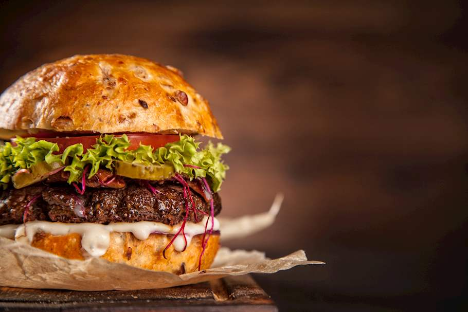

Hamburger

Description
Ideally, the hamburger patty should be medium rare, well-crusted on the surface with a juicy middle. When assembling the burger, use mayonnaise, ketchup, and mustard, but you can use your favorite condiments instead. The recipe is adapted from Saveur.com.
Ingredients
- 1 lb ground beef
- salt and pepper
- 2 hamburger buns
- 2 tomato slices
- pickle slices
- ieberg lettuce
- 2 slices of peeled onion
Steps
- Heat skillet and place patty onto skillet
- Place patt on bottom bun, top with the other ingredients
- Serve with side of choice